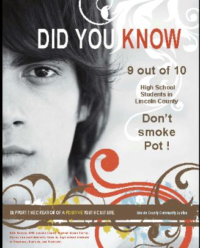
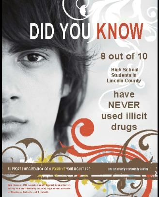
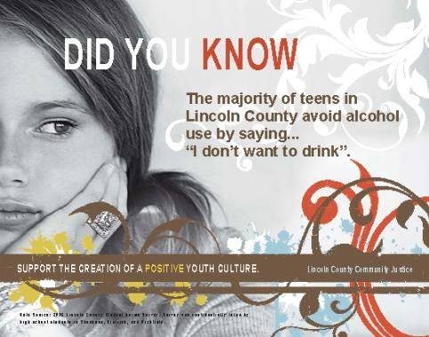
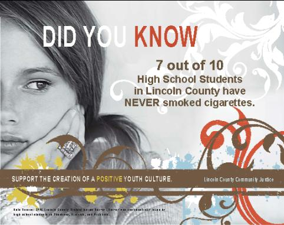

Lincoln County Crossroads: A Resource Guide to the Crossroads of Southern Idaho, Lincoln County web site: lccrossroads.org
Accurate perceptions or seeing the reality of peer social norms can increase healthy behavior and avoidance of alcohol & drug use.
Goals of Social Norms Campaign:
Lincoln County Community Justice, through funding from Benchmark Research & Safety, conducted two Student Social Norms Surveys (the first in May 2008 and the second in May 2009) in all three school districts in Lincoln County. The purpose behind these surveys was to collect data on the actual and perceived norms found in our high school students regarding alcohol, tobacco, and other drug use as well as general health and safety issues that face our youth. Social Norms Survey Evaluation.
Check out our Social Norms posters. If you would like to see a larger view or printable pdf version, just click on them
   